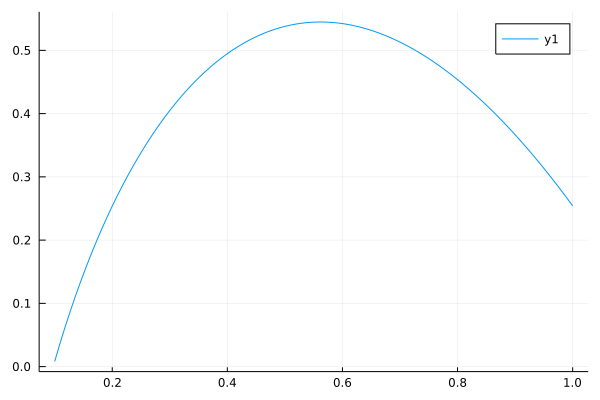
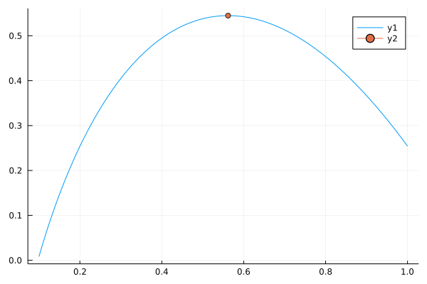

p(q) = -2log(q/2)
c(q) = 0.5 + q*(1-q*exp(-q))
R(q) = q*p(q)
profits(q) = R(q) - c(q)profits (generic function with 1 method)In this tutorial you will learn to code and use common optimization algorithms for static models.
A monopolist produces quantity \(q\) of goods X at price \(p\). Its cost function is \(c(q) = 0.5 + q (1-qe^{-q})\)
The consumer’s demand for price \(p\) is \(x(p)=2 e^{-0.5 p}\) (constant elasticity of demand to price).
Write down the profit function of the monopolist and find the optimal production (if any). Don’t use any library except for plotting.
Assume the monopolist decides on the optimal quantity \(q\). Price at this quantity is determined by demand: \(p(x) = -2 \log\left( \frac{x}{2} \right)\)
Profit function \(\pi(q) = \underbrace{R(q)}_{\text{revenue}} - c(q) = q * p(q) - c(q)\)
p(q) = -2log(q/2)
c(q) = 0.5 + q*(1-q*exp(-q))
R(q) = q*p(q)
profits(q) = R(q) - c(q)profits (generic function with 1 method)using Plotsqvec = range(0.1, 1; length=100)0.1:0.00909090909090909:1.0profits.(qvec);plot(qvec, profits.(qvec))
function golden(f, a, b; fa=f(a), fb=f(b), Φ=0.3, ϵ=1e-5)
if abs(b-a)<ϵ
return (a+b)/2
end
c = a + Φ*(b-a)
d = a + (1-Φ)*(b-a)
fc = f(c)
fd = f(d)
# I need to choose between [a,c,d] or [c,d,b]
if (fc>=fa && fc>=fd)
return golden(f, a, d; fa=fa, fb=fd, Φ=Φ, ϵ=ϵ)
elseif (fd>fc && fd>fb)
return golden(f, c, b; fa=fc, fb=fb, Φ=Φ, ϵ=ϵ)
else
# here I should return a or b
throw("Incorrect function: does not contain an unconstrained local maximum")
end
endgolden (generic function with 1 method)qopt = golden(profits, 0.2, 1.0)0.5618586881082992pl = plot(qvec, profits.(qvec))
plot!([qopt], [profits(qopt)], marker="o")┌ Warning: Skipped marker arg o.
└ @ Plots /home/pablo/.julia/packages/Plots/SVksJ/src/args.jl:873
Alternative approach: define
\(\pi^{\prime} = r^{\prime}(q) - c^{\prime}(q)\)
Look for a zero \(\pi^{\prime}(q) = 0\).
If we do that, we need to check that it is indeed a maximum and that profits are positive.
Consider the function \(f(x,y) = 1-(x-0.5)^2 -(y-0.3)^2\).
Use Optim.jl to minimize \(f\) without constraint. Check you understand diagnostic information returned by the optimizer.
using Optim┌ Info: Precompiling Optim [429524aa-4258-5aef-a3af-852621145aeb]
└ @ Base loading.jl:1278f(x::Vector{Float64}) = 1- (x[1]-0.5)^2 - (x[2]-0.3)^2f (generic function with 1 method)x0 = [0.0, 0.0]
result = Optim.optimize(u->-f(u), x0, Newton()) * Status: success
* Candidate solution
Final objective value: -1.000000e+00
* Found with
Algorithm: Newton's Method
* Convergence measures
|x - x'| = 5.00e-01 ≰ 0.0e+00
|x - x'|/|x'| = 1.00e+00 ≰ 0.0e+00
|f(x) - f(x')| = 3.40e-01 ≰ 0.0e+00
|f(x) - f(x')|/|f(x')| = 3.40e-01 ≰ 0.0e+00
|g(x)| = 1.65e-09 ≤ 1.0e-08
* Work counters
Seconds run: 0 (vs limit Inf)
Iterations: 1
f(x) calls: 4
∇f(x) calls: 4
∇²f(x) calls: 1result.minimizer2-element Array{Float64,1}:
0.5000172833186103
0.2999408484491455Now, consider the constraint \(x<0.3\) and maximize \(f\) under this new constraint.
lower = [-Inf, -Inf]
upper = [0.3, Inf]2-element Array{Float64,1}:
0.3
Infx02-element Array{Float64,1}:
0.0
0.0result_bounded = Optim.optimize(u->-f(u), lower, upper, x0) * Status: success
* Candidate solution
Final objective value: -9.600000e-01
* Found with
Algorithm: Fminbox with L-BFGS
* Convergence measures
|x - x'| = 1.20e-06 ≰ 0.0e+00
|x - x'|/|x'| = 2.83e-06 ≰ 0.0e+00
|f(x) - f(x')| = 0.00e+00 ≤ 0.0e+00
|f(x) - f(x')|/|f(x')| = 0.00e+00 ≤ 0.0e+00
|g(x)| = 1.20e-09 ≤ 1.0e-08
* Work counters
Seconds run: 0 (vs limit Inf)
Iterations: 3
f(x) calls: 56
∇f(x) calls: 56result_bounded.minimizer2-element Array{Float64,1}:
0.2999999988
0.29999999999995636Reformulate the problem as a root finding problem with lagrangians. Write the complementarity conditions.
Solve using NLSolve.jl
A consumer has preferences \(U(c_1, c_2)\) over two consumption goods \(c_1\) and \(c_2\).
Given a budget \(I\), consumer wants to maximize utility subject to the budget constraint \(p_1 c_1 + p_2 c_2 \leq I\).
We choose a Stone-Geary specification where
\(U(c_1, c_2)=\beta_1 \log(c_1-\gamma_1) + \beta_2 \log(c_2-\gamma_2)\)
Write the Karush-Kuhn-Tucker necessary conditions for the problem.
Verify the KKT conditions are sufficient for optimality.
Derive analytically the demand functions, and the shadow price.
Interpret this problem as a complementarity problem and solve it using NLSolve.
Produce some nice graphs with isoutility curves, the budget constraint and the optimal choice.